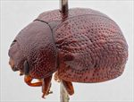
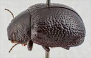
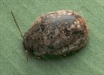
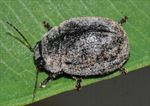
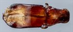
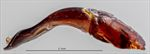
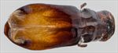
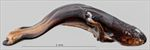
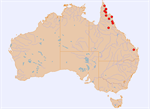

Click on images to enlarge
{kind=link}

Male, Iron Range, Cape York Peninsula, Queensland
{kind=link}

Male, Biggenden, S.E. Queensland
{kind=link}

Male, Einasleigh, North Queensland
{kind=link}

Male, Biggenden, S.E. Queensland
{kind=link}

Aedeagus, dorsal view (Pat Creek, Cape York Peninsula, Queensland)
{kind=link}

Aedeagus, lateral view (Pat Creek, Cape York Peninsula, Queensland)
![Aedeagus, dorsal view (Mt. Morgan/Biloela, Queensland) [QM]](assets/image/Ta60/Ta60_AdGM-132a_SM.jpg){kind=link}

Aedeagus, dorsal view (Mt. Morgan/Biloela, Queensland) [QM]
![Aedeagus, lateral view (Mt. Morgan/Biloela, Queensland) [QM]](assets/image/Ta60/Ta60_AdGM-132b_SM.jpg){kind=link}

Aedeagus, lateral view (Mt. Morgan/Biloela, Queensland) [QM]
{kind=link}

Distribution
Name
Trachymela sp. Ta60
Reference specimen
25-055295, Archer River, Cape York Peninsula, North Queensland.
Adult Description
Length: ♂ 7.0–8.1 mm (n=11), ♀ 8.1–8.9 mm (n=4).
Colouration:
- Head: dark reddish-brown, sometimes with black around sides of fronto-clypeal suture; labrum yellow-brown; mandibles dark reddish-brown with black tips; antennomere 1 light- to mid-brown, sometimes slightly lighter in shade at distal extreme, antennomeres 2–3 concolorous or fractionally lighter in shade, 4–11 fractionally to considerably darker, often with distal extremes of a paler shade.
- Pronotum: uniformly very dark brown, concolorous with or fractionally darker than head, extreme lateral edge black, anterior edge partially or fully black.
- Scutellum: black.
- Elytra: very dark brown, concolorous with pronotum, with elevated verrucae and interstices of a fractionally lighter shade; humeral callus concolorous with surrounding region.
- Venter & Legs: head and thoracic and abdominal ventrites black (or very dark brown), legs may be a fractionally paler shade; elytral epipleura black.
- Cuticular Wax: a relatively thick but quite uneven layer of grey cuticular wax, with a broad band of light brown colour extending from the foveal area of pronotum posteriorly across humeral callus and the inside lateral edge of elytral disc to apex. The northern specimen from Einasleigh has more extensive brown present, with the grey represented as a discontinuous band along the sides of the mostly wax-free elytral summit and the grey band along the elytral margin considerably thinner.
Morphology:
- Head: punctures moderate in size (pd ≈ 2–2.5× ef) and evenly and moderately densely distributed. Antennae moderate length (AL/BL: ♂ 39–46%, ♀ 37–39%), filiform.
- Pronotum: almost evenly curved transversely with only extreme lateral margins becoming very slightly explanate, foveal depression absent or very shallow, always with a broad, round, slightly elevated area near its lateral extreme, punctures clearly impressed, those on discal area similar in size to those on head, evenly (rarely with small, unpunctured spaces) and moderately densely distributed, becoming much coarser towards lateral margins. Much finer punctures are scattered very unevenly among the larger ones. Front margins thickened from behind inside of eye to lateral margin, joining lateral margins in a smoothly rounded right-angle, with lateral margin initially straight for a short length then curving smoothly and very gradually towards rear margin.
- Scutellum: variable, smooth and unpunctured or surface somewhat rough with a scatter of very light punctures much smaller than those on adjacent area on pronotum.
- Elytra: moderate-sized, noticeably flattened, greatest height viewed laterally behind middle of elytral margin; surface very lightly curved in anterior half, curvature becoming increasingly greater towards apex in posterior half so that dorsal surface meets ventral at close to 90°, punctures distinct anteriorly, becoming much less so in posterior third, and relatively evenly distributed, interstices quite convex throughout giving elytra a rough appearance, a few verrucae may be present in anterior half of disc with more in posterior third of disc, many are quite large but only very slightly elevated, smooth and unpunctured, some may be slightly elongated and sometimes part of longitudinal series, less often, only a few scattered enlarged verrucae are scattered among the raised interstices, elytral suture slightly or barely carinate in posterior third, submarginal sulcus well-developed in posterior third, surface continuous under humeral callus, lateral margins noticeably sinuous. Vertical extension of epipleura small (HCE/PW = 0.28–0.32).
- Venter: prosternal process almost parallel-sided and broad, closed anteriorly, setae almost absent from prosternal process and from mesoventrite, one long seta on anterior, median and posterior trochanter; front edge of metaventrite beveled, truncate, vertical section of epipleura in posterior half either absent or at most horizontal section slightly oblique; a row of setae at posterior extending forward to at least 2nd abdominal segment.
Male Genitalia (Aedeagus):
- Dimensions: very short (LPE/BL = 24–27%), in dorsal view, very broad (WPE/LPE = 36–39%).
- Dorsal view: almost parallel-sided for a very short distance from base, then becoming broader (at 65–67% of LPE from apex), continuing parallel-sided or sides diverging very slightly to about 25% of distance from apex, from where sides converge somewhat irregularly towards apex, close to apex sides become concave to form a smooth triangular tip, dorsal surface smoothly curved with dorso-median channel absent, dorso-lateral channels very short.
- Lateral view: curved about 30° near middle of length, from this point to apex almost straight and very thin, sides with an upward kink near anterior end of ostium, tip deflexed.
Immature Stages
Unknown.
Similar species
- Ta14: this species is very similar in most aspects but tends to have more elevated verrucae on the elytra, giving the surface a rougher texture. The aedeagus of the two species is very similar in shape but differs in the relative length of the anterior (flat) section, it being longer in Ta60.
- Ta38: this species is almost identical in most respects to Ta60 and their distributions overlap extensively, though the aedeagus is very different in shape. The verrucae of Ta38 tend to be better defined and more elevated – those of Ta60 are often barely noticeable or very slightly elevated and gently rounded, often slightly paler than the surrounding surface. Where a positive identification has been made by dissection, males of Ta38 are larger than those of Ta60, with only a very small overlap in the distribution of body lengths. The overlap in female sizes seems much more extensive, though only a few females have been positively attributed to Ta60 (by association with males). It is very likely that some of the female specimens currently attributed to Ta38 (where the apparent sex ratio is heavily skewed towards females) belong to Ta60.
- Ta238: this similarly-sized species seems to overlap only slightly with Ta60 geographically. Ta60 can be separated from Ta238 by the presence of a row of long setae on the inner edge of the epipleura near the elytral apex – these are absent or very sparse and short in Ta238.
- Ta47: superficially this species is quite similar in appearance. However, it is smaller, has brown rather than black inner epipleural surfaces and its cuticular wax layer is predominantly brown.
Notes
- Distribution & Abundance: The large majority of specimens of this species were collected in far north Queensland, with just two male specimens from southern Queensland (Biggenden and Biloela). There are many more males than females recorded for this species. Some of this excess is likely due to the difficulty in assigning female specimens to species in the solivagus group, so that females are often unidentified to species or incorrectly assigned. Another factor is that a considerable proportion of specimens in this species were probably collected at MV lights, where males often outnumber females.
- Host Associations: The red bloodwood Corymbia erythrophloia is the host recorded for the southern Queensland specimen, while a northern Queensland specimen was collected from Corymbia clarksoniana and another from an unidentified brown bloodwood (Corymbia sp.).
- Morphological Variation: The aedeagus of both the southern specimens, though of the same shape and dimensionally fitting within the northern group, is noticeably more sinuate viewed laterally. However, no other consistent differences between the northern and southern populations are evident, and they are very likely conspecific.
Copyright © 2026. All rights reserved.